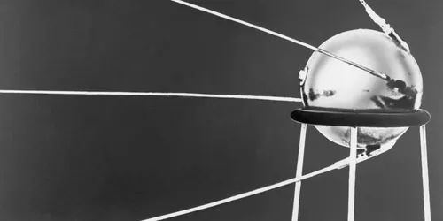
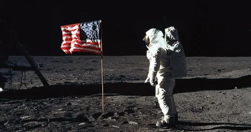

Timeline of Space Exploration

1957 – Sputnik 1
The first artificial satellite launched by the Soviet Union, marking the start of the Space Age.

1969 – Apollo 11
Neil Armstrong and Buzz Aldrin became the first humans to walk on the Moon.
1998 – International Space Station
The ISS became a global hub for long-term space research.

2012 – SpaceX Dragon
SpaceX became the first private company to send a spacecraft to the ISS.